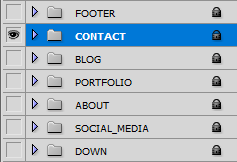

Suenzo | Portfolio PSD Template
- Created: 09.12.2017
- By: zincmiller
-
-
Onepage PSD Pages
-
- 01_01_HomePage
You need to Install below Fonts before use Suenzo. PSD Files.
In order to edit the file, you need to have Adobe Photoshop installed on your system, and the fonts mentioned in the credits installed.
As you can see on the right, the layers are well organized and gropued into folders, which make editing very easy.
So, all you have to do, is select the layer from the right, and then edit it with Adobe Photoshop.
That's all! Enjoy.
To save on upload capacity, I started conducting hide entire Groups when i save some new PSD Files.
How you can turn on Group and view all Layers?
It is super easy. You need to open Photoshop. Go to Windown > Layers (F7) to show the Layers Panel.
In The Layers Panel, Click The Eye Icon. You will turn on Groups of Layers. Enjoy.